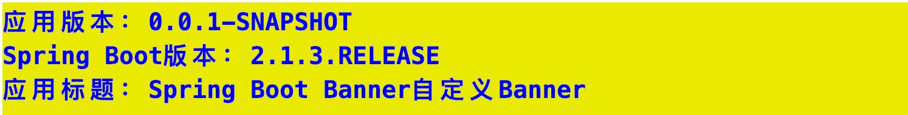
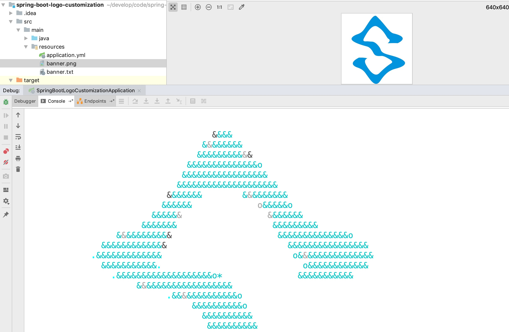

<!DOCTYPE HTML>
<html lang="zh-CN">
<head><meta name="generator" content="Hexo 3.8.0">
    <!--Setting-->
    <meta charset="UTF-8">
    <meta name="viewport" content="width=device-width, user-scalable=no, initial-scale=1.0, maximum-scale=1.0, minimum-scale=1.0">
    <meta http-equiv="X-UA-Compatible" content="IE=Edge,chrome=1">
    <meta http-equiv="Cache-Control" content="no-siteapp">
    <meta http-equiv="Cache-Control" content="no-transform">
    <meta http-equiv="pragma" content="no-cache">
    <meta http-equiv="Cache-Control" content="no-cache, must-revalidate">
    <meta http-equiv="expires" content="Mon Apr 06 2020 02:12:38 GMT+0800 (CST)">
    <meta name="renderer" content="webkit|ie-comp|ie-stand">
    <meta name="apple-mobile-web-app-capable" content="周立的博客 - 关注Spring Cloud、Docker">
    <meta name="apple-mobile-web-app-status-bar-style" content="black">
    <meta name="format-detection" content="telephone=no,email=no,adress=no">
    <meta name="browsermode" content="application">
    <meta name="screen-orientation" content="portrait">
    <meta name="theme-version" content="1.2.3">
    <meta name="root" content="/">
    
    <!--SEO-->

    <meta name="keywords" content="Spring Boot">


    <meta name="description" content="
TIPS
本文基于Spring Boot 2.1.4，理论支持Spring Boot所有版本。

相信玩过Spring Boot的童鞋一定在启动日志中见过类似如下的内容。本文详细探讨如何定制这部分内容，让内容更加趣味性。
1234567  .   ____          _       ...">


<meta name="robots" content="all">
<meta name="google" content="all">
<meta name="googlebot" content="all">
<meta name="verify" content="all">
    <!--Title-->


<title>Spring Boot Banner自定义 | 周立的博客 - 关注Spring Cloud、Docker</title>


    <link rel="alternate" href="../../atom.html" title="周立的博客 - 关注Spring Cloud、Docker" type="application/atom+xml">


    

    


<link rel="stylesheet" href="../../static/css/bootstrap.min-271a649e0635d6fa1b.css">
<link rel="stylesheet" href="../../static/css/font-awesome.min-ac2bebcf7fb5b26.css">
<link rel="stylesheet" href="../../static/css/style-6f3c140f6eee20e6591da00ec0.css">


    


    <script>
        var _hmt = _hmt || [];
        (function() {
            var hm = document.createElement("script");
            hm.src = "https://hm.baidu.com/hm.js?13766878cde148282622871dd245a973";
            var s = document.getElementsByTagName("script")[0];
            s.parentNode.insertBefore(hm, s);
        })();
    </script>


    

</head>

</html>
<!--[if lte IE 8]>
<style>
    html{ font-size: 1em }
</style>
<![endif]-->
<!--[if lte IE 9]>
<div style="ie">你使用的浏览器版本过低，为了你更好的阅读体验，请更新浏览器的版本或者使用其他现代浏览器，比如Chrome、Firefox、Safari等。</div>
<![endif]-->

<body>
    
    <nav class="main-navigation">
    <div class="container">
        <div class="row clearfix">
            <div class="col-md-12 column">
                <nav class="navbar navbar-default" style="background-color:#fff;border:0;margin-bottom:0" role="navigation">
                    <div class="navbar-header">
                        <button type="button" class="navbar-toggle" data-toggle="collapse" data-target="#navbar-collapse-1">
                            <span class="sr-only">切</span>
                            <span class="icon-bar"></span>
                            <span class="icon-bar"></span>
                            <span class="icon-bar"></span>
                        </button>
                        <a class="logo" href="../../index.html">
                            周立的博客
                        </a>
                    </div>

                    <div class="collapse navbar-collapse" style="border:0;" id="navbar-collapse-1">
                        <ul class="nav navbar-nav">
                            
                                
                                    <li>
                                        <a href="../../about.html" target="_blank">
                                            <i class="fa fa-user"></i>
                                            关于我
                                        </a>
                                    </li>
                                
                            
                                
                                    <li>
                                        <a href="../../archives.html" target="_blank">
                                            <i class="fa fa-archive"></i>
                                            归档
                                        </a>
                                    </li>
                                
                            
                                
                                    <li class="dropdown">
                                        <a href="#" class="dropdown-toggle" data-toggle="dropdown" data-hover="dropdown">
                                            <i class="fa fa-fire"></i>
                                            系列课程
                                            <strong class="caret"></strong>
                                        </a>
                                        <ul class="dropdown-menu">
                                            
                                                <li>
                                                    <a href="../../docker/00-docker-lession-index.html" target="_blank">
                                                        <i class="fa "></i>
                                                        Docker系列教程
                                                    </a>
                                                </li>
                                            
                                                <li>
                                                    <a href="../../spring-cloud/spring-cloud-index.html" target="_blank">
                                                        <i class="fa "></i>
                                                        Spring Cloud系列教程
                                                    </a>
                                                </li>
                                            
                                                <li>
                                                    <a href="../spring-boot-index.html" target="_blank">
                                                        <i class="fa "></i>
                                                        Spring Boot系列教程
                                                    </a>
                                                </li>
                                            
                                        </ul>
                                    </li>
                                
                            
                                
                                    <li class="dropdown">
                                        <a href="#" class="dropdown-toggle" data-toggle="dropdown" data-hover="dropdown">
                                            <i class="fa fa-book"></i>
                                            开源书
                                            <strong class="caret"></strong>
                                        </a>
                                        <ul class="dropdown-menu">
                                            
                                                <li>
                                                    <a href="../../books/rocketmq.html" target="_blank">
                                                        <i class="fa fa-rocket"></i>
                                                        RocketMQ开发者指南
                                                    </a>
                                                </li>
                                            
                                                <li>
                                                    <a href="../../books/skywalking.html" target="_blank">
                                                        <i class="fa fa-skyatlas"></i>
                                                        Skywalking 6.2.0中文文档
                                                    </a>
                                                </li>
                                            
                                        </ul>
                                    </li>
                                
                            
                                
                                    <li class="dropdown">
                                        <a href="#" class="dropdown-toggle" data-toggle="dropdown" data-hover="dropdown">
                                            <i class="fa fa-cog"></i>
                                            工具
                                            <strong class="caret"></strong>
                                        </a>
                                        <ul class="dropdown-menu">
                                            
                                                <li>
                                                    <a href="../../tools/markdown2.html" target="_blank">
                                                        <i class="fa "></i>
                                                        微信排版工具2.0
                                                    </a>
                                                </li>
                                            
                                        </ul>
                                    </li>
                                
                            
                        </ul>
                        
                            <form id="search-form" class="navbar-form navbar-right">
                                <div class="form-group input-group">
                                    <input type="text" id="local-search-input" class="form-control" placeholder="搜我...">
                                    <span class="input-group-btn">
                                        <a class="btn btn-default">
                                            <i class="fa fa-search"></i>
                                        </a>
                                    </span>
                                </div>
                                <div id="local-search-result" class="local-search-result-cls"></div>
                            </form>
                        
                    </div>
                </nav>
            </div>
        </div>
    </div>
</nav>

    <a href="javascript:;" target="_blank">
        
    </a>


    <section class="content-wrap">
        <div class="container">
            <div class="row">
                <main class="col-md-8 main-content m-post">
                    

<p id="process"></p>
<article class="post">
    <div class="post-head">
        <h1 id="Spring Boot Banner自定义">
            
                Spring Boot Banner自定义
            
        </h1>
        <div class="post-meta">
    
        <span class="categories-meta fa-wrap">
            <i class="fa fa-folder-open-o"></i>
            <a class="category-link" href="javascript:;">Spring Boot</a>
        </span>
    

    
        <span class="fa-wrap">
            <i class="fa fa-tags"></i>
            <span class="tags-meta">
                
                    <a class="tag-link" href="javascript:;">Spring Boot</a>
                
            </span>
        </span>
    

    
        
        <span class="fa-wrap">
            <i class="fa fa-clock-o"></i>
            <span class="date-meta">2019/05/08</span>
        </span>
        
            <span class="fa-wrap">
                <i class="fa fa-eye"></i>
                <span id="busuanzi_value_page_pv"></span>
            </span>
        
    
</div>
        
        
    </div>
    
    <div class="post-body post-content" id="post-content">
        
    <div class="toc-article">
        <strong>
            目录
        </strong>
        <div class="toc-content">
            <ol class="toc"><li class="toc-item toc-level-2"><a class="toc-link" href="#如何自定义"><span class="toc-text">如何自定义</span></a></li><li class="toc-item toc-level-2"><a class="toc-link" href="#Banner生成工具"><span class="toc-text">Banner生成工具</span></a></li><li class="toc-item toc-level-2"><a class="toc-link" href="#占位符与描述信息"><span class="toc-text">占位符与描述信息</span></a><ol class="toc-child"><li class="toc-item toc-level-3"><a class="toc-link" href="#测试"><span class="toc-text">测试</span></a></li></ol></li><li class="toc-item toc-level-2"><a class="toc-link" href="#图片支持"><span class="toc-text">图片支持</span></a></li><li class="toc-item toc-level-2"><a class="toc-link" href="#禁用Banner"><span class="toc-text">禁用Banner</span></a></li><li class="toc-item toc-level-2"><a class="toc-link" href="#福利"><span class="toc-text">福利</span></a></li><li class="toc-item toc-level-2"><a class="toc-link" href="#灵感启迪"><span class="toc-text">灵感启迪</span></a></li><li class="toc-item toc-level-2"><a class="toc-link" href="#相关源码"><span class="toc-text">相关源码</span></a></li><li class="toc-item toc-level-2"><a class="toc-link" href="#配套代码"><span class="toc-text">配套代码</span></a></li></ol>
        </div>
    </div>


        <blockquote>
<p><strong>TIPS</strong></p>
<p>本文基于Spring Boot 2.1.4，理论支持Spring Boot所有版本。</p>
</blockquote>
<p>相信玩过Spring Boot的童鞋一定在启动日志中见过类似如下的内容。本文详细探讨如何定制这部分内容，让内容更加趣味性。</p>
<figure class="highlight plain"><table><tr><td class="gutter"><pre><span class="line">1</span><br><span class="line">2</span><br><span class="line">3</span><br><span class="line">4</span><br><span class="line">5</span><br><span class="line">6</span><br><span class="line">7</span><br></pre></td><td class="code"><pre><span class="line">  .   ____          _            __ _ _</span><br><span class="line"> /\\ / ___&apos;_ __ _ _(_)_ __  __ _ \ \ \ \</span><br><span class="line">( ( )\___ | &apos;_ | &apos;_| | &apos;_ \/ _` | \ \ \ \</span><br><span class="line"> \\/  ___)| |_)| | | | | || (_| |  ) ) ) )</span><br><span class="line">  &apos;  |____| .__|_| |_|_| |_\__, | / / / /</span><br><span class="line"> =========|_|==============|___/=/_/_/_/</span><br><span class="line"> :: Spring Boot ::        (v2.1.4.RELEASE)</span><br></pre></td></tr></table></figure>
<h2 id="如何自定义"><a href="#如何自定义" class="headerlink" title="如何自定义"></a>如何自定义</h2><p>自定义Banner非常简单，只需在 <code>classpath</code> （ <code>src/main/resources</code> ）下创建创建名为 <code>banner.txt</code> 的文件即可。</p>
<h2 id="Banner生成工具"><a href="#Banner生成工具" class="headerlink" title="Banner生成工具"></a>Banner生成工具</h2><p>自己画Banner是很麻烦的，下面提供几款工具，将图片转换成ASCII字符，快速生成Banner。</p>
<table>
<thead>
<tr>
<th>工具地址</th>
<th>作用</th>
</tr>
</thead>
<tbody>
<tr>
<td><a href="javascript:;" target="_blank" rel="noopener">http://patorjk.com/software/taag</a></td>
<td>写文字，选择字体，将字转成ASCII</td>
</tr>
<tr>
<td><a href="javascript:;" target="_blank" rel="noopener">http://picascii.com/</a></td>
<td>上传图片，将图片转ASCII</td>
</tr>
<tr>
<td>其他</td>
<td>使用搜索引擎，搜索”图片转ASCII”即可</td>
</tr>
</tbody>
</table>
<p>下面是笔者准备好的Banner：</p>
<figure class="highlight plain"><table><tr><td class="gutter"><pre><span class="line">1</span><br><span class="line">2</span><br><span class="line">3</span><br><span class="line">4</span><br><span class="line">5</span><br><span class="line">6</span><br><span class="line">7</span><br><span class="line">8</span><br><span class="line">9</span><br><span class="line">10</span><br><span class="line">11</span><br><span class="line">12</span><br><span class="line">13</span><br><span class="line">14</span><br><span class="line">15</span><br><span class="line">16</span><br><span class="line">17</span><br><span class="line">18</span><br><span class="line">19</span><br><span class="line">20</span><br></pre></td><td class="code"><pre><span class="line">                    _ooOoo_</span><br><span class="line">                   o8888888o</span><br><span class="line">                   88&quot; . &quot;88</span><br><span class="line">                   (| ^_^ |)</span><br><span class="line">                   O\  =  /O</span><br><span class="line">                ____/`---&apos;\____</span><br><span class="line">              .&apos;  \\|     |//  `.</span><br><span class="line">             /  \\|||  :  |||//  \</span><br><span class="line">            /  _||||| -:- |||||-  \</span><br><span class="line">            |   | \\\  -  /// |   |</span><br><span class="line">            | \_|  &apos;&apos;\---/&apos;&apos;  |   |</span><br><span class="line">            \  .-\__  `-`  ___/-. /</span><br><span class="line">          ___`. .&apos;  /--.--\  `. . ___</span><br><span class="line">        .&quot;&quot; &apos;&lt;  `.___\_&lt;|&gt;_/___.&apos;  &gt;&apos;&quot;&quot;.</span><br><span class="line">      | | :  `- \`.;`\ _ /`;.`/ - ` : | |</span><br><span class="line">========`-.____`-.___\_____/___.-`____.-&apos;========</span><br><span class="line">      \  \ `-.   \_ __\ /__ _/   .-` /  /</span><br><span class="line">                     `=---=&apos;</span><br><span class="line">^^^^^^^^^^^^^^^^^^^^^^^^^^^^^^^^^^^^^^^^^^^^^^^^^^</span><br><span class="line">         佛祖保佑       永不宕机       永无Bug</span><br></pre></td></tr></table></figure>
<h2 id="占位符与描述信息"><a href="#占位符与描述信息" class="headerlink" title="占位符与描述信息"></a>占位符与描述信息</h2><p><code>banner.txt</code> 支持占位符，占位符可用于描述项目，同时也可定制Banner显示的具体细节。</p>
<p>允许使用的占位符如下表所示：</p>
<table>
<thead>
<tr>
<th>Variable</th>
<th>Description</th>
</tr>
</thead>
<tbody>
<tr>
<td><code>${application.version}</code></td>
<td>应用版本，从<code>MANIFEST.MF</code> 读取<code>Implementation-Version</code> 的值并显示。例如<code>Implementation-Version: 1.0</code> ，则打印 <code>1.0</code></td>
</tr>
<tr>
<td><code>${application.formatted-version}</code></td>
<td>将应用版本用括号括起来，并添加前缀v。例如：<code>Implementation-Version: 1.0</code> ，则打印 <code>(v1.0)</code></td>
</tr>
<tr>
<td><code>${spring-boot.version}</code></td>
<td>打印Spring Boot版本，例如 <code>2.1.4.RELEASE</code></td>
</tr>
<tr>
<td><code>${spring-boot.formatted-version}</code></td>
<td>将Spring Boot版本用括号括起来，并添加前缀v。例如： <code>(v2.1.4.RELEASE)</code></td>
</tr>
<tr>
<td><code>${Ansi.NAME}</code> (or <code>${AnsiColor.NAME}</code>, <code>${AnsiBackground.NAME}</code>, <code>${AnsiStyle.NAME}</code>)</td>
<td>指定ANSI转义码，详见 <code>org.springframework.boot.ansi.AnsiPropertySource</code></td>
</tr>
<tr>
<td><code>${application.title}</code></td>
<td>应用标题，从 <code>MANIFEST.MF</code> 读取 <code>Implementation-Title</code> 的值并打印。例如 <code>Implementation-Title: itmuch-app</code> ，则打印 <code>itmuch-app</code> 。</td>
</tr>
</tbody>
</table>
<h3 id="测试"><a href="#测试" class="headerlink" title="测试"></a>测试</h3><p>创建 <code>banner.txt</code> ，内容如下：</p>
<figure class="highlight plain"><table><tr><td class="gutter"><pre><span class="line">1</span><br><span class="line">2</span><br><span class="line">3</span><br><span class="line">4</span><br></pre></td><td class="code"><pre><span class="line">$&#123;AnsiBackground.BRIGHT_YELLOW&#125;$&#123;AnsiColor.BLUE&#125;$&#123;AnsiStyle.BOLD&#125;</span><br><span class="line">应用版本：$&#123;application.version&#125;</span><br><span class="line">Spring Boot版本：$&#123;spring-boot.version&#125;</span><br><span class="line">应用标题：$&#123;application.title&#125;</span><br></pre></td></tr></table></figure>
<p>构建好应用后，启动日志将会打印类似如下图的内容：</p>
<p></p>
<h2 id="图片支持"><a href="#图片支持" class="headerlink" title="图片支持"></a>图片支持</h2><p>Spring Boot同样支持使用图片作为Banner，只需将图片放到项目的<code>classpath</code> （<code>src/main/resources</code> ）目录下，命名为<code>banner</code> ，格式支持<code>png</code> 、<code>jpg</code> 、<code>gif</code> 。</p>
<p>不妨测试一下——</p>
<p></p>
<p>由图可知，Spring Boot会自动将图片转换成ASCII字符展示。此外，还可在 <code>application.yml</code> 中使用 <code>spring.banner.image.*</code> 配置图片Banner显示的具体细节。</p>
<blockquote>
<p><strong>TIPS</strong></p>
<p>看到这里，聪明的你一定会想到：不借助本文介绍的 <code>Banner生成工具</code> 也可生成文字Banner！只需将图片命名为banner.jpg/png/gif，然后将打印出来的Banner日志复制出来，并命名为 <code>banner.txt</code> 即可。</p>
</blockquote>
<h2 id="禁用Banner"><a href="#禁用Banner" class="headerlink" title="禁用Banner"></a>禁用Banner</h2><p>添加如下配置：</p>
<figure class="highlight yaml"><table><tr><td class="gutter"><pre><span class="line">1</span><br><span class="line">2</span><br><span class="line">3</span><br></pre></td><td class="code"><pre><span class="line"><span class="attr">spring:</span></span><br><span class="line"><span class="attr">  main:</span></span><br><span class="line"><span class="attr">    banner-mode:</span> <span class="string">"off"</span></span><br></pre></td></tr></table></figure>
<p>或在启动类上添加类似如下代码：</p>
<figure class="highlight java"><table><tr><td class="gutter"><pre><span class="line">1</span><br><span class="line">2</span><br><span class="line">3</span><br><span class="line">4</span><br><span class="line">5</span><br></pre></td><td class="code"><pre><span class="line"><span class="function"><span class="keyword">public</span> <span class="keyword">static</span> <span class="keyword">void</span> <span class="title">main</span><span class="params">(String[] args)</span> </span>&#123;</span><br><span class="line">	SpringApplication app = <span class="keyword">new</span> SpringApplication(MySpringConfiguration.class);</span><br><span class="line">	app.setBannerMode(Banner.Mode.OFF);</span><br><span class="line">	app.run(args);</span><br><span class="line">&#125;</span><br></pre></td></tr></table></figure>
<h2 id="福利"><a href="#福利" class="headerlink" title="福利"></a>福利</h2><p>最后献上笔者项目中所使用的Banner。</p>
<figure class="highlight plain"><table><tr><td class="gutter"><pre><span class="line">1</span><br><span class="line">2</span><br><span class="line">3</span><br><span class="line">4</span><br><span class="line">5</span><br><span class="line">6</span><br><span class="line">7</span><br><span class="line">8</span><br><span class="line">9</span><br><span class="line">10</span><br><span class="line">11</span><br><span class="line">12</span><br><span class="line">13</span><br><span class="line">14</span><br><span class="line">15</span><br><span class="line">16</span><br><span class="line">17</span><br><span class="line">18</span><br><span class="line">19</span><br><span class="line">20</span><br><span class="line">21</span><br><span class="line">22</span><br><span class="line">23</span><br><span class="line">24</span><br></pre></td><td class="code"><pre><span class="line">$&#123;AnsiColor.GREEN&#125;</span><br><span class="line">                    _ooOoo_</span><br><span class="line">                   o8888888o</span><br><span class="line">                   88&quot; . &quot;88</span><br><span class="line">                   (| ^_^ |)</span><br><span class="line">                   O\  =  /O</span><br><span class="line">                ____/`---&apos;\____</span><br><span class="line">              .&apos;  \\|     |//  `.</span><br><span class="line">             /  \\|||  :  |||//  \</span><br><span class="line">            /  _||||| -:- |||||-  \</span><br><span class="line">            |   | \\\  -  /// |   |</span><br><span class="line">            | \_|  &apos;&apos;\---/&apos;&apos;  |   |</span><br><span class="line">            \  .-\__  `-`  ___/-. /</span><br><span class="line">          ___`. .&apos;  /--.--\  `. . ___</span><br><span class="line">        .&quot;&quot; &apos;&lt;  `.___\_&lt;|&gt;_/___.&apos;  &gt;&apos;&quot;&quot;.</span><br><span class="line">      | | :  `- \`.;`\ _ /`;.`/ - ` : | |</span><br><span class="line">========`-.____`-.___\_____/___.-`____.-&apos;========</span><br><span class="line">      \  \ `-.   \_ __\ /__ _/   .-` /  /</span><br><span class="line">                     `=---=&apos;</span><br><span class="line">^^^^^^^^^^^^^^^^^^^^^^^^^^^^^^^^^^^^^^^^^^^^^^^^^^</span><br><span class="line">         佛祖保佑       永不宕机       永无Bug</span><br><span class="line">==================================================</span><br><span class="line">Application Info：$&#123;application.title&#125;-$&#123;application.version&#125;</span><br><span class="line">Powered by：Spring Boot $&#123;spring-boot.version&#125;</span><br></pre></td></tr></table></figure>
<p>效果：</p>
<p></p>
<h2 id="灵感启迪"><a href="#灵感启迪" class="headerlink" title="灵感启迪"></a>灵感启迪</h2><p>如果你对Banner放什么感到茫然，笔者给你几个思路：</p>
<ul>
<li>项目愿景/期望(例如上面，笔者就期望永不宕机、永无Bug)</li>
<li>项目/团队/企业Slogan(好的项目都有一个好的Slogan)</li>
<li>你们老板的帅照(会跪舔很重要啊)</li>
<li>各种恶搞</li>
</ul>
<h2 id="相关源码"><a href="#相关源码" class="headerlink" title="相关源码"></a>相关源码</h2><ul>
<li>org.springframework.boot.SpringApplicationBannerPrinter</li>
<li>org.springframework.boot.SpringBootBanner</li>
</ul>
<p>比较简单，对原理感兴趣的童鞋可以研究一下。</p>
<h2 id="配套代码"><a href="#配套代码" class="headerlink" title="配套代码"></a>配套代码</h2><ul>
<li><a href="javascript:;" target="_blank" rel="noopener">GitHub</a></li>
<li><a href="javascript:;" target="_blank" rel="noopener">Gitee</a></li>
</ul>

        <h2>相关文章</h2><ul><li><a href="../../dubbo/spring-boot-dubbo-mock/index.html">Spring Boot、Dubbo项目Mock测试踩坑与总结</a></li><li><a href="../../other/mybatis-optional-support/index.html">我最喜欢的Mybatis 3.5新特性——Optional支持</a></li><li><a href="../actuator-prometheus-grafana/index.html">Spring Boot 2.x监控数据可视化(Actuator + Prometheus + Grafana手把手)</a></li><li><a href="../send-email/index.html">Spring Boot 2发送邮件手把手图文教程</a></li><li><a href="../change-logger-level/index.html">Spring Boot 2动态修改日志级别</a></li></ul>
    </div>
    
    <div class="post-footer">
        <div class="col-sm-10">
            <div>
                <b>本文链接</b>：<a href="" target="_blank">Spring Boot Banner自定义</a>
            </div>
            <div>
                
                    转载声明：本博客由周立创作，采用 <a href="javascript:;" target="_blank"> CC BY 3.0 CN </a> 许可协议。可自由转载、引用，但需署名作者且注明文章出处。如转载至微信公众号，请在文末添加作者公众号二维码。
                
            </div>
            <div>
                
            </div>
        </div>
        <div class="col-sm-2">
            
        </div>
    </div>
</article>

<div class="article-nav prev-next-wrap clearfix">
    
        <a target="_blank" href="../spring-boot-index.html" class="pre-post btn btn-default" title="Spring Boot系列教程">
            <i class="fa fa-angle-left fa-fw"></i><span class="hidden-lg">上一篇</span>
            <span class="hidden-xs">Spring Boot系列教程</span>
        </a>
    
    
        <a target="_blank" href="../../work/light-security/index.html" class="next-post btn btn-default" title="Light Security 1.0.1发布">
            <span class="hidden-lg">下一篇</span>
            <span class="hidden-xs">Light Security 1.0.1发布</span><i class="fa fa-angle-right fa-fw"></i>
        </a>
    
</div>


    <div id="comments">
        
   <p>评论系统未开启，无法评论！</p>

    </div>


                </main>
                
    <aside class="col-md-4 sidebar">
        
        <div class="widget about-me">
    <div class="row">
        <div class="col-md-5">
            
        </div>
        <div class="col-md-7">
            <a class="series-a" href="javascript:void(0)">公众号</a>
            <ul>
                <li>• 技术干货推送</li>
                <li>• 免费资料领取</li>
                <li><b>• 扫码领取更多惊喜</b></li>
            </ul>
        </div>
    </div>
    
        <div class="row">
            <div class="col-md-5">
                
            </div>
            <div class="col-md-7">
                <a class="series-a" href="javascript:void(0)">小程序</a>
                <ul>
                    <li>• 原创笔记</li>
                    <li>• 独家心法</li>
                    <li><b>• 扫码领取</b></li>
                </ul>
            </div>
        </div>
    
</div>


        
        
    <div class="ad">
        <div class="row">
            <div class="col-md-12">
                <a href="javascript:;" rel="nofollow" target="_blank">
                    
                </a>
            </div>
        </div>
    </div>


        
        <div class="widget">
    <div class="row">
        <div class="col-md-3">
            
        </div>
        <div class="col-md-9">
            <a class="series-a" target="_blank" href="../../spring-cloud/spring-cloud-index.html">Spring Cloud系列教程</a>
            <p>全面、通俗易懂的Spring Cloud教程</p>
        </div>
    </div>
    <div class="row">
        <div class="col-md-3">
            
        </div>
        <div class="col-md-9">
            <a class="series-a" target="_blank" href="javascript:;">Spring Cloud Alibaba视频教程</a>
            <p>全网唯一，你值得拥有</p>
        </div>
    </div>
    <div class="row">
        <div class="col-md-3">
            
        </div>
        <div class="col-md-9">
            <a class="series-a" target="_blank" href="../../docker/00-docker-lession-index.html">Docker系列教程</a>
            <p>Docker系列</p>
        </div>
    </div>
    <div class="row">
        <div class="col-md-3">
            
        </div>
        <div class="col-md-9">
            <a class="series-a" target="_blank" href="../spring-boot-index.html">Spring Boot系列教程</a>
            <p>Boot是基石...</p>
        </div>
    </div>
</div>


        
        
    <div class="widget">
        <h3 class="title">分类</h3>
        <ul class="category-list"><li class="category-list-item"><a class="category-list-link" href="javascript:;"><i class="fa" aria-hidden="true">Docker</i></a><span class="category-list-count">31</span></li><li class="category-list-item"><a class="category-list-link" href="javascript:;"><i class="fa" aria-hidden="true">Kubernetes</i></a><span class="category-list-count">2</span></li><li class="category-list-item"><a class="category-list-link current" href="javascript:;"><i class="fa" aria-hidden="true">Spring Boot</i></a><span class="category-list-count">6</span></li><li class="category-list-item"><a class="category-list-link" href="javascript:;"><i class="fa" aria-hidden="true">Spring Cloud</i></a><span class="category-list-count">94</span></li><li class="category-list-item"><a class="category-list-link" href="javascript:;"><i class="fa" aria-hidden="true">Spring Cloud Alibaba</i></a><span class="category-list-count">16</span></li><li class="category-list-item"><a class="category-list-link" href="javascript:;"><i class="fa" aria-hidden="true">Spring Cloud Stream</i></a><span class="category-list-count">1</span></li><li class="category-list-item"><a class="category-list-link" href="../../categories/其他/index.html"><i class="fa" aria-hidden="true">其他</i></a><span class="category-list-count">13</span></li><li class="category-list-item"><a class="category-list-link" href="../../categories/安装教程/index.html"><i class="fa" aria-hidden="true">安装教程</i></a><span class="category-list-count">7</span></li><li class="category-list-item"><a class="category-list-link" href="../../categories/工作/index.html"><i class="fa" aria-hidden="true">工作</i></a><span class="category-list-count">20</span></li></ul>
    </div>


        
        
        
        

        
    </aside>

            </div>
        </div>
    </section>
    <footer class="main-footer">
    <div class="container">
        <div class="row">
        </div>
    </div>
</footer>

<a id="back-to-top" class="icon-btn hide">
	<i class="fa fa-chevron-up"></i>
</a>


    <div class="copyright">
    <div class="container">
        <div class="row">
            <div class="col-sm-12">
                <div class="busuanzi">
    
        访问量:
        <strong id="busuanzi_value_site_pv">
            <i class="fa fa-spinner fa-spin"></i>
        </strong>
        &nbsp; | &nbsp;
        访客数:
        <strong id="busuanzi_value_site_uv">
            <i class="fa fa-spinner fa-spin"></i>
        </strong>
        &nbsp; <strong>Since 2018-12-26</strong>
    
</div>

            </div>
            <div class="col-sm-12">
                <span>Copyright &copy; 2017
                </span> |
                <span>
                    Powered by <a href="javascript:;" class="copyright-links" target="_blank" rel="nofollow">Hexo</a>
                </span> |
                <span>
                    Theme by <a href="javascript:;" class="copyright-links" target="_blank" rel="nofollow">ITMuch</a>
                </span>
            </div>
        </div>
    </div>
</div>

<script src="../../static/js/jquery.min.js"></script>
<script src="../../static/js/bootstrap.min.js"></script>
<script src="../../static/js/bootstrap-hover-dropdown.min.js"></script>

    <script src="../../static/js/search-3f4fbd0557c869ca0516ebb5f.js"></script>


    <script async="" src="../../static/js/busuanzi.pure.mini.js"></script>


<script src="../../static/js/app-da10bb3b2ae5c8348d2bd2cc3faf.js"></script>


</body>
